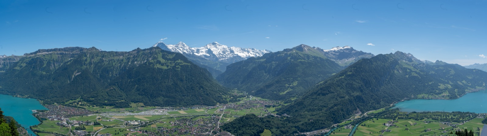
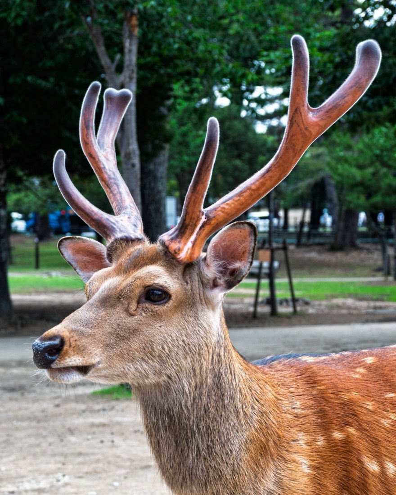

Purplelink mostly builds software, but I also photograph when I travel, on a Nikon. This year I started licensing those photographs through stock agencies, and I have now put about 500 of them on Fine Art America, where each one can be ordered as a canvas, a framed print or a fine art print.

Where to find them
The shop is organized into collections by place, so you can go straight to the part of the world you care about:
- Switzerland Alps and Lakes
- Japan
- Iceland waterfalls and landscapes
- Cologne and Heidelberg, Germany
- Copenhagen and Denmark
- London landmarks
- Amsterdam canals
- Hawaii and Oahu
- Arizona desert and monsoon storms
- San Francisco
- Vancouver
- Waterfalls
- Animals and wildlife

The title field that cut 65 listings short
Uploading several hundred photographs by hand is not practical, so I automated it, and the automation had a bug worth describing because it is easy to miss.
Fine Art America fills in a new listing's title from metadata embedded in the image file, the IPTC Object Name field. That field holds at most 64 bytes, and accented letters were lost along the way. My uploader accepted whatever title the site filled in. The result was 65 listings that went live with titles cut off mid-phrase, such as "Historic red-roofed barracks with Danish flag and industrial", and Icelandic place names with letters missing: Skógafoss became "Skgafoss" and Jökulsárlón became "Jkulsrln".
On a print listing, the title is the text that matters most, both for the site's own search and for Google. A cut-off title loses its last few words, which are often the place name, and a misspelled place name matches nobody's search. The site itself accepts 100 characters, so the fix was to stop trusting the embedded field. The uploader now writes the full title from my own records, with accents spelled plainly (Skogafoss, Jokulsarlon), which is also how most people type them into a search box. The 65 affected listings are being corrected.
If you upload photographs anywhere that reads embedded metadata, compare the live titles against what you meant to send. The truncation happens silently.
If you are looking for something for a wall, the full shop is on Fine Art America.